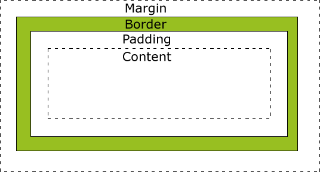
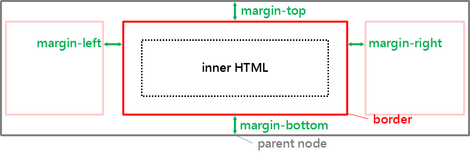
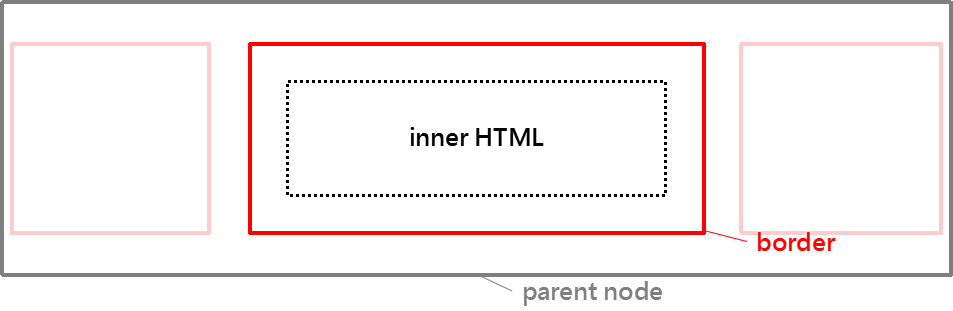
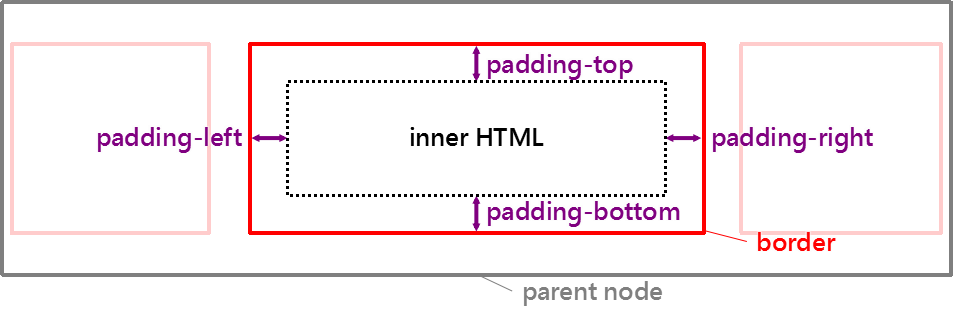

title: CSS基础知识
tags: CSS
categories: 干垃圾
keywords: CSS基础知识
description: CSS学习记录
top:
repost:
hot: true
others:
date: 2019-02-08 09:35:03
{% note success no-icon %}
本文为CSS基础知识。
{% endnote %}
{% cq %}CSS的一些基础知识{% endcq %}
CSS全称（Cascading Style Sheets）称为层叠样式表，他的存在使 HTML 与样式分离。
目的
<link rel="stylesheet" type="text/css" href="url地址"/>
<link title="不同屏幕大小的引入范例" media="screen and (max-width: 699px)" href="url地址" rel="stylesheet" type="text/css"/>HTML5中，type可以省略，但是rel不可省略。
<style type="text/css">
css代码
</style><style type="text/css">
@import url(...);
</style>链接式与引入式(导入式)的区别：引入式在网页加载完成后再装载CSS，因此这就导致了一个问题，如果网页比较大则会出现先显示无样式的页面，闪烁一下之后，再出现网页的样式。这是一个缺陷。而引入式在网页加载时装载。
直接在Element中添加style属性即可。
* {
...
}
#id-name {
...
}
使用：
<tag id="id-name"></tag>
.class-name {
...
}
<!-- 一个标签有多个类时可以这样选取：（tagname.classnameA.classnameB.classnameC） -->
使用：
<tag class="class-name"></tag>
所有相同的标签名称都会被选取
tagname {
...
}
所有具有该属性，不论属性值为何都会被选取
[tag-attribute] {
…
}
符合指定属性与其属性值的元素才会被选取
[tag-attribute=keyword] {
…
}
= 完全相符关键字
* = 完全相符关键字，或包含「关键字」
~ = 完全相符关键字，或包含「△关键字」 「△关键字△」「关键字△」（△为空格）
^ = 完全相符关键字，或以「关键字」开头
| = 完全相符关键字，或以「关键字」「关键字-」开头
$ = 完全相符关键字，或以「关键字」结尾
{% cq %}
以上选择器可配合一起使用：tagname.class-name[tag-attribute=keyword] {...}。
（注意：单个文件中，id选择器只能拥有一个，且只能使用一次。）
{% endcq %}
<!-- 选取super-selector后代中，所有的sub-selector -->
super-selector△sub-selector {
...
}
<!-- 选取parent-selector中的所有子child-selector（必须是儿子，孙子就不行了！） -->
parent-selector > child-selector {
...
}
<!-- 选取selectorA的下一个selectorB -->
selectorA + selectorB{
...
}
<!-- 选取selectorA之后的selectorB -->
selectorA ~ selectorB{
...
}
<!-- 结果属于第一个子节点（查找div下面的第一个子节点） -->
div :first-child {
...
}
<!-- 结果属于最后一个子节点（查找div下面的最后一个a） -->
div a:last-child {
...
}
<!-- 结果不属于最后一个子节点（查找div下面不是最后一个a的所有元素）后面的选择器也可以使用，均类似。 -->
div :not(a:last-child) {
...
}
<!-- 结果属于第 n 个子节点(单数节点：odd，偶数节点：even) -->
selector:nth-child(n) {
...查找第n个子selector，后同。
}
<!-- 结果属于第 an+b 个子节点(n从0开始的递增值，a、b为常数。) -->
selector:nth-child(an+b) {
...
}
<!-- 结果相同元素的属于第 n 个子节点(单数节点：odd，偶数节点：even) -->
selector:nth-of-type(n) {
...
}
<!-- 结果相同元素的属于第 an+b 个子节点(n从0开始的递增值，a、b为常数。) -->
selector:nth-of-type(an+b) {
...
}
注意：
△！important，可以防止样式被覆盖，即优先级最高。)| 名称 | 使用时机 |
|---|---|
| :hover | 当鼠标移过元素时 |
| :focus | 当元素被 focus 时（聚焦） |
| :active | 当元素执行时，或者说被点击时。 |
| :target | 当元素被呼叫时 |
| :first-child | 当元素为第一个子节点时 |
| :last-child | 当元素为最后一个子节点时 |
{% cq %}
例让所有书签被呼叫时，字体颜色为红色： *:target { color: red; } (星号可写可不写)。
{% endcq %}
| 名称 | 使用时机 |
|---|---|
| :first-line | 第一行 |
| :first-letter | 第一个字 |
| :before | 元素内容之前 |
| :after | 元素内容之后 |
例在a标签后面添加内容ABC：
a:after {
content: "ABC";
}例在a标签后面添加背景：
a:after {
content: "";
display: inline-block;
width: 35px;
height: 35px;
position: absolute;
background-image: url(...);
background-size: contain;
background-repeat: no-repeat;
}例在a标签后面添加某个属性的值：
a:after {
content: attr(attribute-name);
}伪类还有很多巧妙的用法可以自己去探索~



注意：边框还可以分为内边框和外边框。默认为外边框，如果你想要变成内边框（即元素内容的宽度包含边框），只需设置属性
box-sizing: border-box;

元素实际宽高为：左(上)margin+左(上)border+左(上)padding+内容+右(下)padding+右(下)border+右(下)margin
元素背景占用为：左(上)border+左(上)padding+内容+右(下)padding+右(下)border
还可以设置最大最小宽高（max-width or min-height)具体操作自己摸索。
css中颜色有很多种写法。
color: colorname; 这种写法，支持那些常用的颜色。（透明色：transparent）
例: color: red;
color: rgb(red,green,blue); 这种写法，是使用三原色调色。
例: color: rgb(0,0,0);
color: rgb(red,green,blue,Alpha); (Alpha是0～1之间的值，0 完全透明，1完全不透明)这种写法同上。
例: color: rgb(0,0,0,0.5);
color: HEX; 这种写法是写颜色的16进制值。
例: color: #FFF; color: #FF0000;
font-style 默认为normal正常，可设置italic斜体。
font-weight 默认为normal正常，可设置bold或者bolder加粗。
font-size 自己设置，也可使用其样式（例：small、large、x-larger等等）。
font-family 字体设置，需搭配@font-face。
例：
有两种类型的字体系列名称：
指定的系列名称：具体字体的名称，比如：“times”、“courier”、“arial”。(或者自定义的字体)
通常字体系列名称：比如：“serif”、“sans-serif”、“cursive”、“fantasy”、“monospace”
font-family 可以把多个字体名称作为一个“回退”系统来保存。如果浏览器不支持第一个字体，则会尝试下一个。也就是说，font-family 属性的值是用于某个元素的字体族名称或/及类族名称的一个优先表。浏览器会使用它可识别的第一个值。
提示：使用逗号分割每个值，并始终提供一个类族名称作为最后的选择。
注意：使用某种特定的字体系列（Geneva）完全取决于用户机器上该字体系列是否可用；这个属性没有指示任何字体下载。因此，强烈推荐使用一个通用字体系列名作为后路。
font-family: "my-font-family-name",Serif;
@font-face {
font-family: my-font-family-name;
src: url('url地址');
font-stretch: 拉伸字体;
font-style: 字体样式;
font-weight: 字体粗细;
}
text-indent 首行缩进 自己设置值
text-align 文字排列（center、right、left）
text-shadow 文字阴影 （四个值：分别是水平阴影 垂直阴影 模糊范围 颜色）
text-transform 字母大小写 （none 原格式|uppercase 大写|lowercase 小写|capitalize 首字母大写）
text-decoration 字符装饰 （none 无装饰|underline 下划线|overline 顶线|line-through 删除线）
letter-spacing 字符之间的间距
line-height 行高（一般设置与元素高度相同，字符就会垂直居中。）
进阶内容：
background
opacity visibility display:none区别
column、outline、border、boxshadow、list、table
cursor、overflow、resize
display
position、z-index
float、对齐方式、上下左右居中方式
动画
各浏览器默认属性以及可继承与不可继承的属性
常用单位、设计哲学